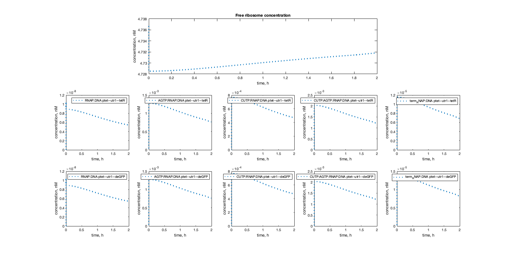

Tutorial II: Model details: the species, reactions, and object oriented structure
This tutorial is a continuation of the first tutorial. We use the same negative autoregulation circuit, but now discuss the species, reactions, and other details of the model.
Contents
Create the model
txtl_init; tube1 = txtl_extract('E2'); tube2 = txtl_buffer('E2'); tube3 = txtl_newtube('negautoreg'); % name the circuit txtl_add_dna(tube3, 'ptet(50)', 'utr1(20)', 'tetR(1200)', 1, 'plasmid'); txtl_add_dna(tube3, 'ptet(50)', 'utr1(20)', 'deGFP(1000)', 1, 'plasmid'); Mobj = txtl_combine([tube1, tube2, tube3]); [simData] = txtl_runsim(Mobj,14*60*60); t_ode = simData.Time; x_ode = simData.Data; txtl_plot(t_ode, x_ode, Mobj);
Current plot held

Model structure
The model is organized as a Simbiology model object Mobj. To see an overview of the structure of Mobj, type in
Mobj
SimBiology Model - mix_of_E2_E2_negautoreg
Model Components:
Compartments: 1
Events: 2
Parameters: 88
Reactions: 54
Rules: 8
Species: 48
We see that the model has 1 compartment 2 events, 88 parameters, 54 reactions 8 rules and 48 species. We can explore the various components of the model by typing
Mobj.Species Mobj.Reactions Mobj.Events Mobj.Rules
For example, look at the first 30 species and their initial concentrations by typing in:
model_species = Mobj.species; model_species(1:30)
SimBiology Species Array Index: Compartment: Name: InitialAmount: InitialAmountUnits: 1 contents RNAP 4.7367 2 contents Ribo 266.42 3 contents RecBCD 5 4 contents RNase 30269 5 contents AGTP 3.18005e+06 6 contents CUTP 1.90803e+06 7 contents AA 3.18005e+07 8 contents protein tetR 0 9 contents aTc 0 10 contents protein tetRdimer 0 11 contents RNA utr1--tetR 0 12 contents Ribo:RNA utr1--tetR 0 13 contents DNA ptet--utr1--tetR 1 14 contents RNAP:DNA ptet--utr1--tetR 0 15 contents CUTP:AGTP:RNAP:DNA ptet--utr1--tetR 0 16 contents term_RNAP:DNA ptet--utr1--tetR 0 17 contents AA:AGTP:Ribo:RNA utr1--tetR 0 18 contents term_Ribo:RNA utr1--tetR 0 19 contents protein deGFP 0 20 contents protein deGFP* 0 21 contents RNA utr1--deGFP 0 22 contents Ribo:RNA utr1--deGFP 0 23 contents DNA ptet--utr1--deGFP 1 24 contents RNAP:DNA ptet--utr1--deGFP 0 25 contents CUTP:AGTP:RNAP:DNA ptet--utr1--deGFP 0 26 contents term_RNAP:DNA ptet--utr1--deGFP 0 27 contents AA:AGTP:Ribo:RNA utr1--deGFP 0 28 contents term_Ribo:RNA utr1--deGFP 0 29 contents 2 aTc:protein tetRdimer 0 30 contents AGTP:RNAP:DNA ptet--utr1--tetR 0
Looking at some of the species in the model, we see that there is a naming pattern to the species. For instance, the RNA, DNA and protein species are
The DNA follows the pattern DNA promoter--UTR--CDS, where promoter, UTR and CDS are the specifications of the promoter, the 5' untranslated region and the coding sequence. In our example, we have
DNA ptet--utr1--deGFP DNA ptet--utr1--deGFP
Similarly, the RNA and proteins have the specification patterns RNA UTR--CDS and protein CDS:
RNA utr1--tetR RNA utr1--deGFP protein deGFP protein deGFP* protein tetR protein tetRdimer
We also have other species like RNAP (RNA polymerase, Ribo (ribosome), AGTP (a lumped species representing one unit of ATP and one of GTP). Species can bind to each other to form new species, and the resulting complexes are denoted by concatenating the constituent species with a colon (:). For example, the following species are complexes:
Ribosome bound to RNA:
Ribo:RNA utr1--tetR
RNA polymerase bound to DNA, and CUTP and AGTP bound to the resulting complex.
RNAP:DNA ptet--utr1--tetR CUTP:AGTP:RNAP:DNA ptet--utr1--tetR
The species, reactions, parameters etc are all Simbiology objects, and we can query their properties using the MATLAB get and set functions. For example, protein tetR is the 8th species, so we can look at its properties using
get(Mobj.Species(8))
%
Annotation: ''
BoundaryCondition: 0
ConstantAmount: 0
InitialAmount: 0
InitialAmountUnits: ''
Name: 'protein tetR'
Notes: ''
Parent: [1×1 SimBiology.Compartment]
Tag: ''
Type: 'species'
UserData: 400
To list which properties can be set by the user, use
set(Mobj.Species(8))
ans =
struct with fields:
Annotation: {}
BoundaryCondition: {}
ConstantAmount: {}
InitialAmount: {}
InitialAmountUnits: {}
Name: {}
Notes: {}
Tag: {}
UserData: {}
And set values using the syntax
set(Mobj.Species(8), 'InitialAmount', 50) % initial tetR protein concentration set to 50
Learn more about the get and set commands by typing in
help get help set
Again, we suggest getting familiarized with Simbiology here.
To look at the at the reactions of the model object, type in
Mobj.reactions
into the command line. We see that the reactions can be divided into transcription, translation, RNA degradation and miscellaneous reactions. For example, the reactions associated with the TetR repressor are:
Index: Reaction: TetR induction, dimerization and repression: 1 [protein tetRdimer] + 2 aTc <-> [2 aTc:protein tetRdimer] 2 2 [protein tetR] <-> [protein tetRdimer] 12 [DNA ptet--utr1--tetR] + [protein tetRdimer] <-> [DNA ptet--utr1--tetR:protein tetRdimer]
Transctiption reactions: RNAP binding, nucleotide binding in two steps,
transcription (with consumption reaction) and termination
4 [DNA ptet--utr1--tetR] + RNAP <-> [RNAP:DNA ptet--utr1--tetR]
5 [CUTP:AGTP:RNAP:DNA ptet--utr1--tetR] -> [term_RNAP:DNA ptet--utr1--tetR] + [RNA utr1--tetR]
6 [CUTP:AGTP:RNAP:DNA ptet--utr1--tetR] -> [RNAP:DNA ptet--utr1--tetR]
7 [term_RNAP:DNA ptet--utr1--tetR] -> RNAP + [DNA ptet--utr1--tetR]
8 [RNAP:DNA ptet--utr1--tetR] + AGTP <-> [AGTP:RNAP:DNA ptet--utr1--tetR]
9 [RNAP:DNA ptet--utr1--tetR] + CUTP <-> [CUTP:RNAP:DNA ptet--utr1--tetR]
10 [AGTP:RNAP:DNA ptet--utr1--tetR] + CUTP <-> [CUTP:AGTP:RNAP:DNA ptet--utr1--tetR]
11 [CUTP:RNAP:DNA ptet--utr1--tetR] + AGTP <-> [CUTP:AGTP:RNAP:DNA ptet--utr1--tetR] Translation reactions: Ribosome binding, AA and nucleotide binding,
translation (with consumption reaction), termination
3 [RNA utr1--tetR] + Ribo <-> [Ribo:RNA utr1--tetR]
13 [Ribo:RNA utr1--tetR] + AA <-> [AA:Ribo:RNA utr1--tetR]
14 [AA:Ribo:RNA utr1--tetR] + AGTP <-> [AA:AGTP:Ribo:RNA utr1--tetR]
15 [AA:AGTP:Ribo:RNA utr1--tetR] -> [term_Ribo:RNA utr1--tetR] + [protein tetR]
16 [AA:AGTP:Ribo:RNA utr1--tetR] -> [term_Ribo:RNA utr1--tetR]
17 [term_Ribo:RNA utr1--tetR] -> [RNA utr1--tetR] + RiboRNase mediated RNA degradation 18 [RNA utr1--tetR] + RNase <-> [RNA utr1--tetR:RNase] 19 [RNA utr1--tetR:RNase] -> RNase 20 [Ribo:RNA utr1--tetR] + RNase <-> [Ribo:RNA utr1--tetR:RNase] 21 [Ribo:RNA utr1--tetR:RNase] -> RNase + Ribo 22 [AA:AGTP:Ribo:RNA utr1--tetR] + RNase <-> [AA:AGTP:Ribo:RNA utr1--tetR:RNase] 23 [AA:AGTP:Ribo:RNA utr1--tetR:RNase] -> RNase + AA + AGTP + Ribo 24 [term_Ribo:RNA utr1--tetR] + RNase <-> [term_Ribo:RNA utr1--tetR:RNase] 25 [term_Ribo:RNA utr1--tetR:RNase] -> RNase + Ribo 26 [AA:Ribo:RNA utr1--tetR] + RNase <-> [AA:Ribo:RNA utr1--tetR:RNase] 27 [AA:Ribo:RNA utr1--tetR:RNase] -> RNase + AA + Ribo
The properties of the first reaction can be listed using
get(Mobj.Reactions(1))
Active: 1
Annotation: ''
Name: ''
Notes: ''
Parent: [1×1 SimBiology.Model]
Products: [1×1 SimBiology.Species]
Reactants: [2×1 SimBiology.Species]
Reaction: '[protein tetRdimer] + 2 aTc <-> [2 aTc:protein tetRdimer]'
ReactionRate: 'TXTL_INDUCER_TETR_ATC_F*[protein tetRdimer]*aTc^2 - TXTL_INDUCER_TETR_ATC_R*[2 aTc:protein tetRdimer]'
Reversible: 1
Stoichiometry: [-1 -2 1]
KineticLaw: [1×1 SimBiology.KineticLaw]
Tag: ''
Type: 'reaction'
UserData: []
Use the commands
Mobj.Reactions(1).<property>
to navigate the properties of the reaction. Note that the Procuct and Reactant properties point to the respective species objects and the Parent property points to the model object:
Mobj.Reactions(1).Reactants % list of species objects that are the reactants. Mobj.Reactions(1).Parent % the model object the reaction belongs to.
SimBiology Species Array
Index: Compartment: Name: InitialAmount: InitialAmountUnits:
1 contents protein tetRdimer 0
2 contents aTc 0
SimBiology Model - mix_of_E2_E2_negautoreg
Model Components:
Compartments: 1
Events: 2
Parameters: 88
Reactions: 54
Rules: 8
Species: 48
The KineticLaw property points to the Simbiology KineticLaw object associated with this reaction. This object holds information associated with the type of reaction kinetics used by this reaction, and of the parameters associated with this reaction. Query it using:
get(Mobj.Reactions(1).KineticLaw)
Annotation: ''
Name: ''
Notes: ''
Tag: ''
Type: 'kineticlaw'
UserData: []
Expression: 'MassAction'
KineticLawName: 'MassAction'
Parameters: [2×1 SimBiology.Parameter]
ParameterVariables: {1×2 cell}
ParameterVariableNames: {1×2 cell}
Parent: [1×1 SimBiology.Reaction]
SpeciesVariables: {'MassAction Species'}
SpeciesVariableNames: {1×3 cell}
And query the (forward and reverse binding rate) parameters of this reaction using
get(Mobj.Reactions(1).KineticLaw.Parameters(1)) get(Mobj.Reactions(1).KineticLaw.Parameters(2))
Annotation: ''
ConstantValue: 1
Name: 'TXTL_INDUCER_TETR_ATC_F'
Notes: ''
Parent: [1×1 SimBiology.KineticLaw]
Tag: ''
Type: 'parameter'
UserData: []
Value: 4.8404
ValueUnits: ''
Annotation: ''
ConstantValue: 1
Name: 'TXTL_INDUCER_TETR_ATC_R'
Notes: ''
Parent: [1×1 SimBiology.KineticLaw]
Tag: ''
Type: 'parameter'
UserData: []
Value: 0.6551
ValueUnits: ''
We recommend playing with these commands and gaining some failiarity with the structure of the model.
Plotting individual species
Now that we know more about how the underlying model is organized, we can plot individual species by querying their concentration trajectoriees. Do this using the function findspecies to get the index of the species object of interest. For example, if you want to plot the trajectory of the dimerized tetR protein, you could type in
tetRindex = findspecies(Mobj, 'protein tetRdimer'); figure plot(simData.Time/3600, simData.data(:,tetRindex)); title('Dimerized tetR concentration') ylabel('concentration, nM') xlabel('time, h') curraxis = axis; axis([curraxis(1:2) 0 curraxis(4)])

Plotting multiple species
You can, of course, plot any subset of the species in the model, and arrange them into a plot using MATLAB's subplot command. For example, say we would like to explore the ribosome dynamics. Looking at the species list above, we make a list of all the complexes with the ribosome species in them.
riboList = {'RNAP', '', '', '', ''
'RNAP:DNA ptet--utr1--tetR',...
'AGTP:RNAP:DNA ptet--utr1--tetR',...
'CUTP:RNAP:DNA ptet--utr1--tetR',...
'CUTP:AGTP:RNAP:DNA ptet--utr1--tetR',...
'term_RNAP:DNA ptet--utr1--tetR'
'RNAP:DNA ptet--utr1--deGFP',...
'AGTP:RNAP:DNA ptet--utr1--deGFP',...
'CUTP:RNAP:DNA ptet--utr1--deGFP',...
'CUTP:AGTP:RNAP:DNA ptet--utr1--deGFP',...
'term_RNAP:DNA ptet--utr1--deGFP'};
We can plot the dynamics of these species as follows.
plotix = simData.Time/3600 < 2; timevec = simData.Time(simData.Time/3600 < 2)/3600; figure('Position', [50 50 1400 700]) subplot(3, 5, [2 3 4]) spIndex = findspecies(Mobj, riboList{1, 1}); plot(timevec,... simData.data(plotix,spIndex),... 'LineWidth', 2, 'LineStyle', ':'); title('Free ribosome concentration') ylabel('concentration, nM') xlabel('time, h') hold on for i = 6:15 subplot(3, 5, i) rowix = 1+floor((i-1)/5); colix = mod(i, 5); if colix == 0 colix = 5; end spIndex = findspecies(Mobj, riboList{rowix, colix}); plot(timevec,... simData.data(plotix,spIndex),... 'LineWidth', 2, 'LineStyle', ':'); legend(riboList{rowix, colix}) ylabel('concentration, nM') xlabel('time, h') end